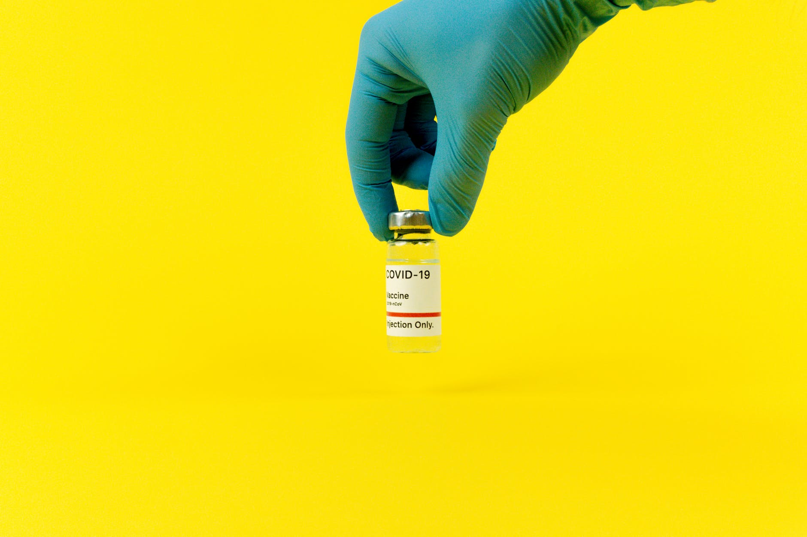

Снігу більше не буде? Як зміниться погода в Україні
До кінця тижня у країні будуть опади, однак у перші дні лютого снігу вже не буде
Погода в Україні від сьогодні, 28 січня, стане набагато теплішою. У деяких регіонах країни буде плюсова температура. Температура вночі 2-8 градусів морозу, а вдень від трьох градусів морозу до двох градусів тепла. На високогір'ї Карпат вночі та вдень – 7-12 градусів морозу. Сильного вітру у ці дні не буде, але синоптики обіцяють ожеледицю. У перші дні лютого опадів не буде, а температура повітря – близько чотирьох градусів морозу.
ДжерелоApple тестує розблокування iPhone обличчям у масці
Apple ввела низку нових функцій, одна з яких дозволяє користувачеві ідентифікувати себе за Face ID та розблокувати телефон у масці
З пандемією користувачі iPhone зіткнулися з проблемою розпізнавання обличчя, тому що в магазині потрібно надягати маску, а для розблокування телефону її потрібно зняти. Тепер ця проблема розв'язана, зокрема, якщо ви носите окуляри, але тільки для користувачів останніх моделей та останньої iOS 15.4. Функція розпізнаватиме унікальні риси навколо ока для аутентифікації, але обличчя потрібно буде відсканувати повторно. Для Face ID у масці не потрібен Apple Watch. Проте для Face ID з функцією маски потрібна модель iPhone 12 або iPhone 13 – як виявилося, користувачі з iPhone 11 не можуть нею скористатися.
ДжерелоCovid у світі: кількість інфікованих перевищує 70 млн
26 січня у світі діагностували 3 549 909 нових випадків захворювання на коронавірус.
Наразі нараховується майже 71 млн активних випадків захворювання. Зокрема, у США зафіксували понад 497 тисяч, у Франції – понад 392 тисячі та в Індії – понад 251 тисячу нових інфікувань. Далі за кількістю хворих у рейтингу знаходяться Бразилія і Німеччина. Україна – на 24 місці. Найбільше смертей за добу від коронавірусу в США (2 689), Росії (665), Бразилії (662). Загалом у світі за добу від недуги померли 10 240 осіб. В Європі за добовим приростом хвороби лідирують Франція, Німеччина, Італія.
ДжерелоРегулятор ЄС схвалив ковід-таблетки Pfizer для пацієнтів з високим ризиком
Європейське агентство з лікарських засобів (EMA) рекомендувало таблетки від коронавірусу Paxlovid компанії Pfizer для лікування дорослих з ризиком тяжкого перебігу захворювання.
Європейське агентство з лікарських засобів (EMA) у четвер схвалило використання противірусної таблетки від COVID-19 Pfizer Inc для лікування дорослих з ризиком важких захворювань на тлі боротьби з варіантом Omicron. Єврокомісар з питань охорони здоров'я Стелла Кіріакідес заявила, що зараз є значний прогрес у створенні ліків, які вона описала як другу лінію захисту після вакцин. "Paxlovid — це перший пероральний противірусний засіб для домашнього використання в нашому портфоліо, і він може реально змінити ситуацію для людей із високим ризиком важкої форми COVID", — сказала вона. Італія, Німеччина та Бельгія є одними з кількох країн ЄС, які закупили таблетки. Таблетки Merck також перевіряються в ЄС, але схвалення щодо них триває довше, оскільки компанія переглянула дані своїх випробувань у листопаді, заявивши, що препарат був значно менш ефективним, ніж вважалося раніше. Таблетки від коронавірусу, особливо Pfizer, розглядаються як нові перспективні варіанти лікування, які можна приймати вдома при появі симптомів COVID-19, щоб запобігти госпіталізації та смерті.
ДжерелоКурс валют на 28 січня: міжбанк, "чорний" та готівковий ринки
28 січня котирування гривні до долара на відкритті міжбанку встановилися на рівні 28,90 – 28,92 гривні.
28 січня котирування гривні до долара на відкритті міжбанку встановилися на рівні 28,90 – 28,92 гривні. На 11:20 середні курси валют на міжбанку були такими: Долар США – 28,82 – 28,84 гривні; Євро – 32,09 – 32,11 гривні. На готівковому ринку котирування гривні до долара становлять 28,73 – 29,02 гривні. Євро купують за 31,99 гривні, продають за 32,45 гривні. На "чорному" ринку долар торгується за 28,81 – 28,92 гривні, євро – 32,17 – 32,46 гривні. Національний банк послабив офіційний курс гривні до долара на 19 копійок, встановивши його на 28 січня на рівні 28,99 гривні. 27 січня котирування гривні до долара на закритті міжбанку встановилися на рівні 28,90 – 28,92 гривні.
Джерело